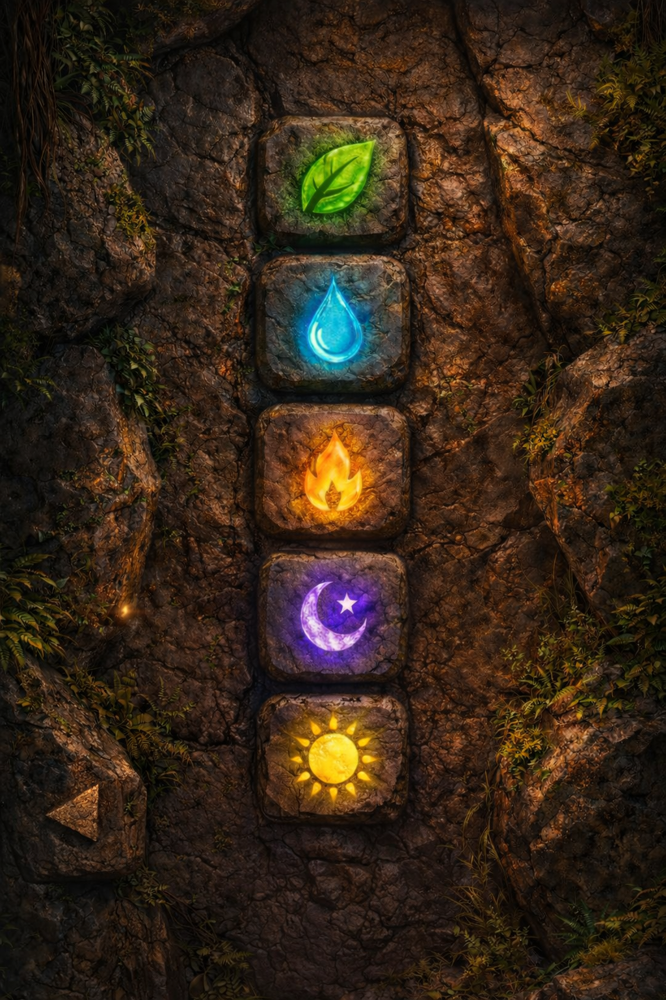
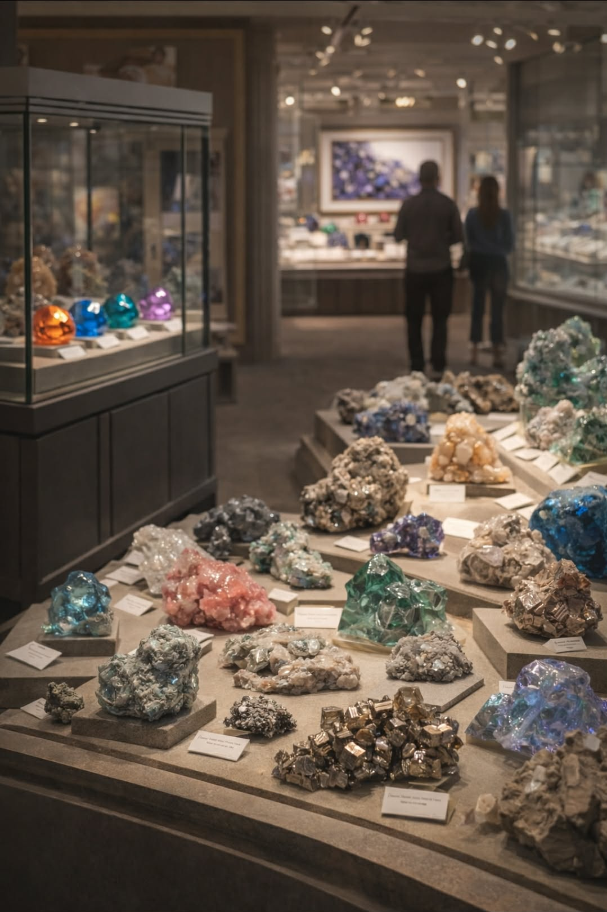

Recovered Mechanism
Stone Wall Sequence
Observe the symbols. Enter the sequence correctly to restore the record.



Sequence: —
Observe the symbols. Enter the sequence correctly to restore the record.

